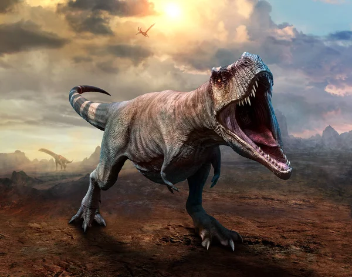

Birds are one kind of dinosaur because they share a common ancestor with non-avian dinosaurs. Avian dinosaurs, represented by modern birds, evolved from theropod dinosaurs and possess unique adaptations such as feathers and hollow bones for flight. They are found in almost every corner of the globe, showcasing remarkable behaviors, like migratory journeys.

Non-avian dinosaurs are call to all dinosaurs besides birds and they are already extinct. Non-avian dinosaurs, a diverse group of reptiles, roamed the Earth for over 160 million years, ranging from towering herbivores like Diplodocus to agile predators like Velociraptor. Their fossilized remains offer valuable insights into prehistoric ecosystems, revealing a world dominated by creatures of immense size, power, and evolutionary innovation.
